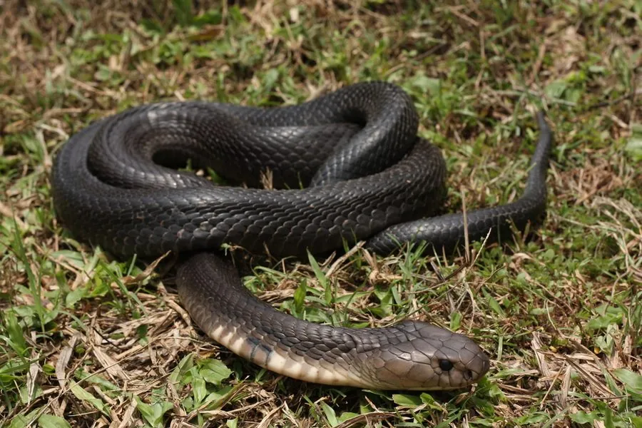

爬行动物 · 动物界
孟加拉眼镜蛇 Naja kaouthia

南亚与东南亚的剧毒蛇，颈背有单眼状斑纹，会喷毒也能咬人，中国西南有分布，属国家二级保护动物。
- 分类
- 门脊索动物门纲爬行纲目有鳞目科眼镜蛇科属眼镜蛇属
- 栖息环境
- 南亚与东南亚的农田、灌丛、河岸湿地与村落附近
- 地理分布
- 印度、孟加拉国、缅甸、泰国及中国云南、广西等地
- 保护级别
- IUCN 无危（LC）；中国国家二级保护动物
物种志
孟加拉眼镜蛇体长 1.2–2 米，头部椭圆，颈褶能膨大，颈背常有一个圆形或单眼状的浅色斑纹，“单眼斑眼镜蛇”之名由此而来；体色从灰褐、黑褐到淡黄都有，腹部淡黄并带深色横纹。它既能咬人，也能喷射毒液。
它分布于印度、孟加拉国、缅甸、泰国和中国西南部，栖息于农田、灌丛、河岸和村落附近，多在夜间和黄昏活动，捕食鼠类、蛙类、鱼类、鸟类和其他蛇类。每年 4–7 月繁殖，雌蛇产卵 15–30 枚，孵化期约 55–70 天。孟加拉眼镜蛇毒性较强，毒液含神经毒素和组织毒素，被咬或毒液溅入眼睛都须立即就医；在中国它被列为国家二级保护动物，禁止非法捕捉和买卖。
形态与习性
- 食性鼠类、蛙类、鱼类、鸟类和其他蛇类
- 体长1.2–2 m
- 寿命约 15–20 年
- 繁殖卵生，15–30 枚，孵化 55–70 天
- 活动节律夜间和黄昏活动
- 毒性神经毒素和组织毒素，被咬须立即就医
趣味知识
- 孟加拉眼镜蛇颈背的圆形斑纹像一只单眼，因此又叫“单眼斑眼镜蛇”。
- 它既能咬人也能喷射毒液，是危险性较高的毒蛇之一。
- 在中国，孟加拉眼镜蛇属于国家二级保护动物，禁止非法捕捉。